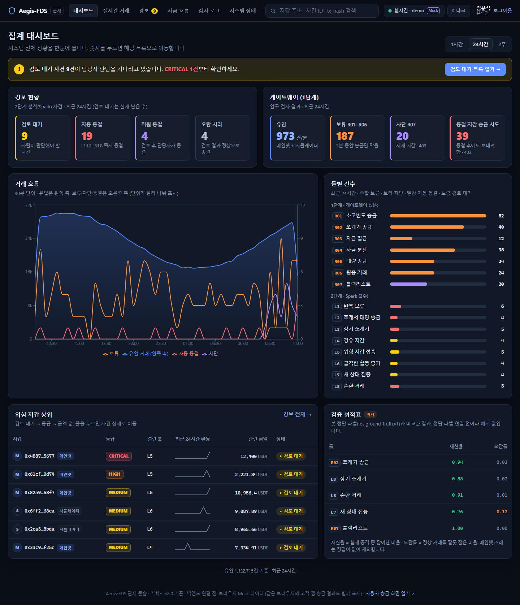
Aegis-FDS 웹은 두 개의 화면으로 나뉩니다. 주소도 다르고, 화면 코드도 따로 만들어집니다.
| 화면 | 주소 | 사용자 | 하는 일 |
|---|---|---|---|
| 사용자 송금 화면 | http://192.168.0.22:8080 | 고객 (로그인 없음) | USDT 송금. 결과는 완료 · 지연 · 거절로만 쉬운 말로 안내. 탐지 기준·룰 코드는 보여 주지 않음 |
| 관리자 화면 | http://192.168.0.22:8080/admin | 분석관 (로그인 필요) | 경보 확인, 사건 근거 검토, 지갑 동결·해제·오탐 처리, STR 초안, 감사 기록, 시스템 상태 |
고객에게 탐지 기준을 알려 주면 그 기준을 피해 가기 쉬워지므로, 고객 화면에는 결과만 보여 주고 근거는 관리자 화면에서만 봅니다.
| 단계 | 담당 · 기간 | 결과 |
|---|---|---|
| 1단계 입구 검사 | 게이트웨이 + Redis 최근 5분 | R01~R06에 걸리면 3분 보류 (HTTP 429, 송금만 막고 입금은 허용). R07 블랙리스트는 항상 차단 (403) |
| 2단계 심층 분석 | Spark 최근 2주 (시연 20분) | L1·L2·L3·L8 → 자동 동결 L4·L5·L6·L7 → 검토 대기 (담당자가 관리자 화면에서 동결 또는 오탐 처리) |
node -v)cd C:\workspace\이더리움\frontend
npm install
npm run dev
# 출력 예: Local: http://localhost:8080/ · Network: http://192.168.0.22:8080/192.168.0.22 주소를 씁니다 (점이 아니라 콜론 :).| 주소 | 열리는 화면 |
|---|---|
http://192.168.0.22:8080 | 사용자 송금 화면 (바로 열림) |
http://192.168.0.22:8080/admin | 관리자 화면 → 로그인하지 않았으면 로그인 화면 |
…/admin/#/alerts 등 | 관리자 화면 안의 메뉴 (주소를 북마크해 두면 바로 열림) |
Ctrl + C.| 명령 · 설정 (frontend 폴더) | 용도 |
|---|---|
npm run build → npm run preview | 배포용 파일을 만들고 8080에서 확인. dist/index.html(송금)과 dist/admin/index.html(관리자)이 따로 만들어짐 |
.env.local의 VITE_PERIOD_PROFILE | 2단계 분석 기간. demo(기본) = 2주→20분, 24시간→5분, 1시간→1분 / prod = 실제 기간 |
.env.local의 VITE_API_BASE | 백엔드 주소. 비어 있으면 Mock 데이터 사용 |
PowerShell에서 npm이 "스크립트를 실행할 수 없으므로"로 막히면 npm.cmd run dev로 실행하거나 Set-ExecutionPolicy -Scope CurrentUser RemoteSigned를 한 번 실행합니다. 팀원 접속에는 8080 방화벽 허용(firewall_setup.ps1, 관리자 권한)이 필요합니다.
고객이 쓰는 휴대폰 앱 모양의 화면입니다. 로그인 없이 바로 열리며, 데모 지갑에는 100,000 USDT가 들어 있습니다.
0x로 시작하는 42자리. [붙여넣기]로 클립보드 주소를 넣을 수 있습니다. 주소를 넣으면 바로 안내가 나옵니다 (아래 표).| 안내 | 뜻 |
|---|---|
| ✓ 전에 보낸 적 있는 주소 | 이전에 송금이 완료된 주소 |
| 처음 보내는 주소입니다 | 앞뒤 글자만 비슷한 가짜 주소인지 확인 권유 |
| ⚠ 앞뒤 글자가 같지만 다른 주소 | 주소 오염(가짜 주소) 사기 의심. "전체 주소를 직접 확인했습니다"를 체크해야 송금 가능 |
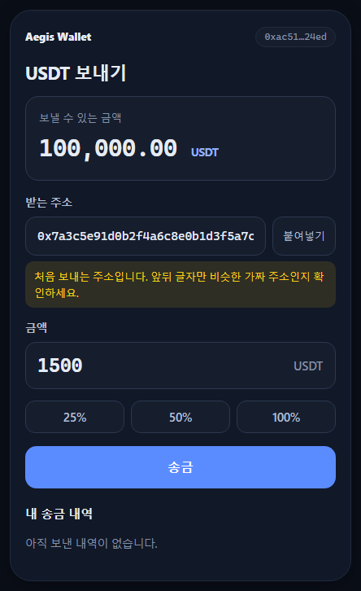
| 고객 화면 표시 | 실제 판정 (관리자만 봄) | 설명 |
|---|---|---|
| ✓ 송금이 완료되었습니다 | 200 통과 | 잔액이 줄고 내역에 "완료" |
| ⏳ 송금이 잠시 지연되고 있습니다 | 429 TEMP_HOLD_R01~R06 | 3분 보류. 배너에 "약 n분 뒤 다시 시도" 표시, 내역에 "지연 · 다시 시도". 입금은 가능 |
| ✕ 보낼 수 없는 주소입니다 | 403 BLACKLISTED_RECEIVER | 받는 지갑이 제재(블랙리스트) 지갑 |
| ✕ 송금이 제한된 계정입니다 | 403 FROZEN_L* | 2단계에서 동결된 지갑. 고객센터 문의 안내. 관리자가 해제해야 다시 송금 가능 |
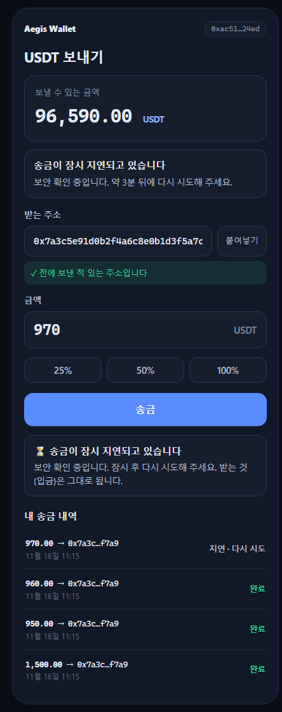
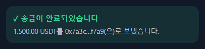
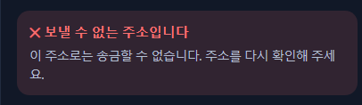
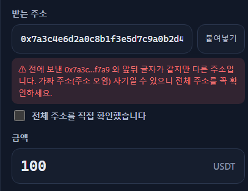
http://192.168.0.22:8080/admin 입력 → 로그인 화면이 열립니다. 로그인하지 않으면 관리자 화면의 어떤 메뉴 주소로 들어와도 로그인 화면으로 돌아옵니다.| 아이디 | 비밀번호 | 권한 |
|---|---|---|
| analyst | aegis1234 | 분석관 — 조회 + 동결 · 해제 · 오탐 처리 · STR 내려받기 |
| viewer | view1234 | 조회 전용 — 조치 버튼이 눌리지 않음 |
src/admin/auth.js)에 들어 있는 시연용이므로 실제 비밀번호를 쓰지 마세요. 백엔드 로그인 API가 나오면 실제 인증으로 바뀝니다.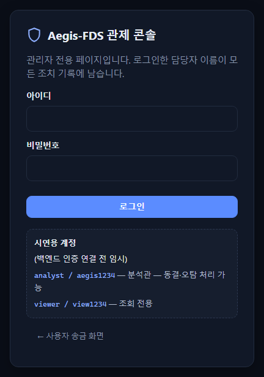
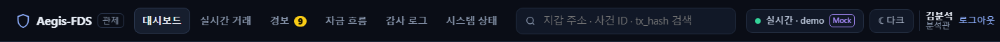
| 상단 바 요소 | 설명 |
|---|---|
| 메뉴 | 대시보드 · 실시간 거래 · 경보 · 자금 흐름 · 감사 로그 · 시스템 상태. "경보" 옆 노란 숫자 = 검토 대기 사건 수 |
| 검색창 | 지갑 주소 · 사건 ID · tx_hash 일부(3글자 이상)를 입력하면 결과가 뜨고, 누르면 해당 사건으로 이동 |
| ● 실시간 · demo Mock | 새 데이터가 2초마다 들어오는 중. 누르면 일시정지 — 화면을 천천히 볼 때 사용. demo = 시연 기간(20분/5분/1분), Mock = 백엔드 연결 전 |
| 다크 / 라이트 | 화면 밝기 전환 (발표 화면이 밝으면 라이트 권장) |
| 이름 · 로그아웃 | 로그인한 담당자와 권한 |
| 표시 | 뜻 |
|---|---|
| 주황 | 1단계 보류 (R01~R06, 3분) |
| 보라 | 1단계 차단 (R07 블랙리스트) · 직원 동결 |
| 빨강 | 2단계 자동 동결 (L1·L2·L3·L8), 기준을 넘은 근거 |
| 노랑 | 2단계 검토 대기 (L4~L7) — 담당자가 처리할 일 |
| CRITICAL HIGH MEDIUM | 사건 등급: 긴급 · 높음 · 보통 |
| 지갑 옆 작은 표시 | 메인넷(온체인) · 시뮬레이터(검증 봇, R01~R06 면제) · 고객 앱(송금 화면) · OFAC SDN(제재) · 새 지갑(처음 본 지 24시간 이내) |
색만으로 구분하지 않도록 항상 글자(검토 대기, 자동 동결 등)와 아이콘을 함께 표시합니다. 주소에 마우스를 올리면 전체 주소가, 시각에 올리면 정확한 날짜·시간이 보입니다.
| 영역 | 보는 법 |
|---|---|
| 할 일 안내 (노란 띠) | 검토 대기 사건 수와 CRITICAL 수. [검토 대기 목록 열기]로 바로 이동 |
| 경보 현황 | 검토 대기 · 자동 동결 · 직원 동결 · 오탐 처리 건수 (2단계 사건) |
| 게이트웨이 (1단계) | 분당 유입 · 보류 · 차단 · 동결 지갑의 송금 시도 건수 |
| 거래 흐름 | 유입(파랑, 왼쪽 축)과 보류·차단·동결(오른쪽 축). 단위가 달라 축을 나눴습니다 |
| 룰별 건수 | R01~R07, L1~L8 막대. 막대를 누르면 해당 목록으로 이동 |
| 위험 지갑 상위 | 검토 대기 → 등급 → 금액 순. 줄을 누르면 사건 상세 |
| 검증 성적표 예시 | 재현율(실제 공격 중 잡아낸 비율) · 오탐률(정상을 잘못 잡은 비율). 봇 정답 라벨 연결 전이라 예시 값 |
오른쪽 위 1시간 / 24시간 / 2주로 기간을 바꿉니다. 숫자 카드는 모두 누르면 해당 목록으로 이동합니다.
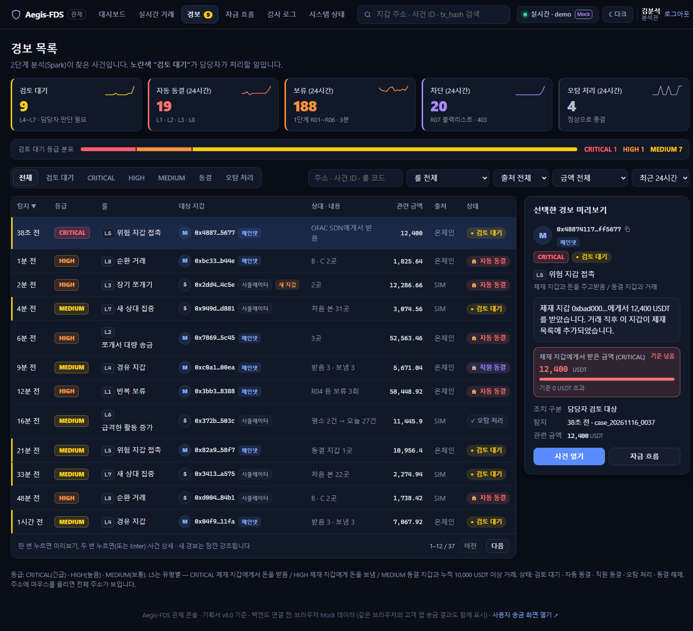
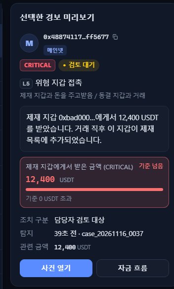
| 칸 | 뜻 |
|---|---|
| 탐지 | 몇 분 전에 탐지됐는지 |
| 등급 | CRITICAL · HIGH · MEDIUM |
| 룰 | L1~L8 코드와 이름 |
| 대상 지갑 | 걸린 지갑과 출처 표시 |
| 상대 · 내용 | 예: "OFAC SDN에게서 받음", "처음 본 31곳" |
| 관련 금액 | 근거 거래의 합계 |
| 출처 | 온체인 · SIM · 앱 |
| 상태 | 검토 대기 · 자동 동결 · 직원 동결 · 오탐 처리 · 동결 해제 |
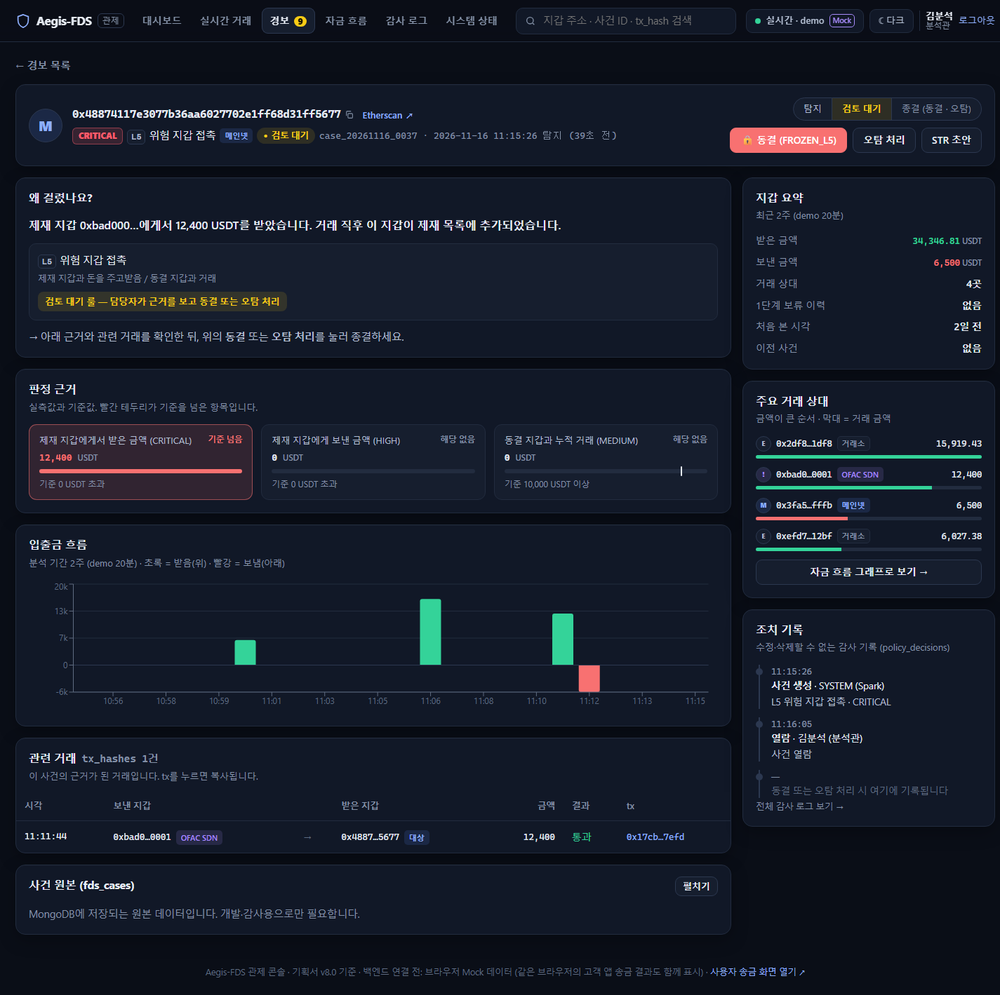
| 영역 | 보는 법 |
|---|---|
| 진행 단계 | 탐지 → 검토 대기 → 종결(동결·오탐). 지금 단계가 노랗게 표시 |
| 왜 걸렸나요? | 한 문장 설명 + 룰 설명 + 자동 동결 룰인지, 검토 대기 룰인지 |
| 판정 근거 | 실측값과 기준값 막대. 빨간 테두리 = 기준을 넘은 항목, 세로 선 = 기준 위치 |
| 입출금 흐름 | 분석 기간 동안 받은 돈(초록, 위) · 보낸 돈(빨강, 아래) |
| 관련 거래 | 근거가 된 거래 목록. tx를 누르면 복사 |
| 지갑 요약 · 주요 거래 상대 | 최근 2주(시연 20분) 받은/보낸 금액, 거래 상대 수, 1단계 보류 이력, 이전 사건 |
| 사건 원본 | MongoDB에 저장되는 원본(JSON). [펼치기]로 확인 (개발·감사용) |
| 버튼 | 나오는 상태 | 결과 |
|---|---|---|
| 🔒 동결 (FROZEN_Lx) | 검토 대기 | 지갑 송금이 403으로 즉시 거절 (입금은 가능). 상태 → 직원 동결 |
| 오탐 처리 | 검토 대기 | 정상 거래로 종결. 지갑 제한 없음. 상태 → 오탐 처리 |
| 동결 해제 | 자동 동결 · 직원 동결 | 다시 송금 가능. 해제 이전 기록으로는 다시 자동 동결하지 않음 |
| STR 초안 | 항상 | 의심거래보고서 초안 표시 → [복사] 또는 [내려받기 (.txt)] |
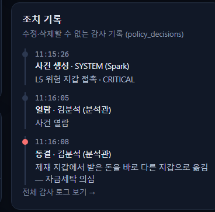
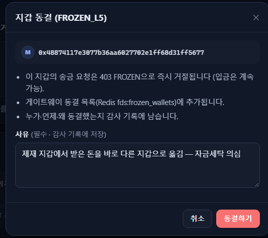
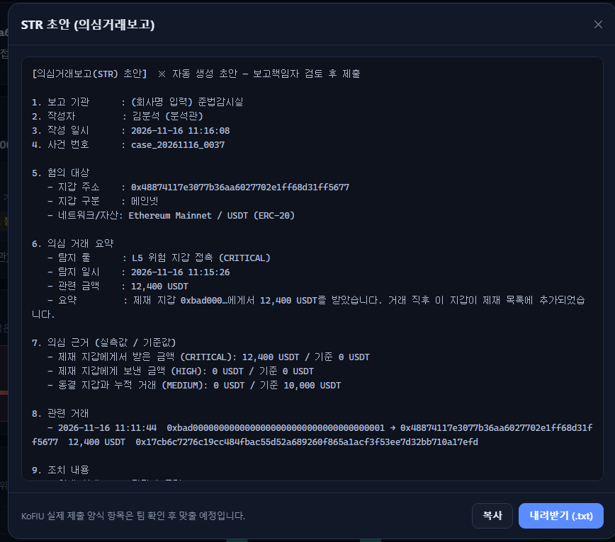
조회 전용(viewer) 계정은 동결 · 오탐 처리 · 해제 버튼이 회색으로 눌리지 않고, STR은 보기·복사만 됩니다.
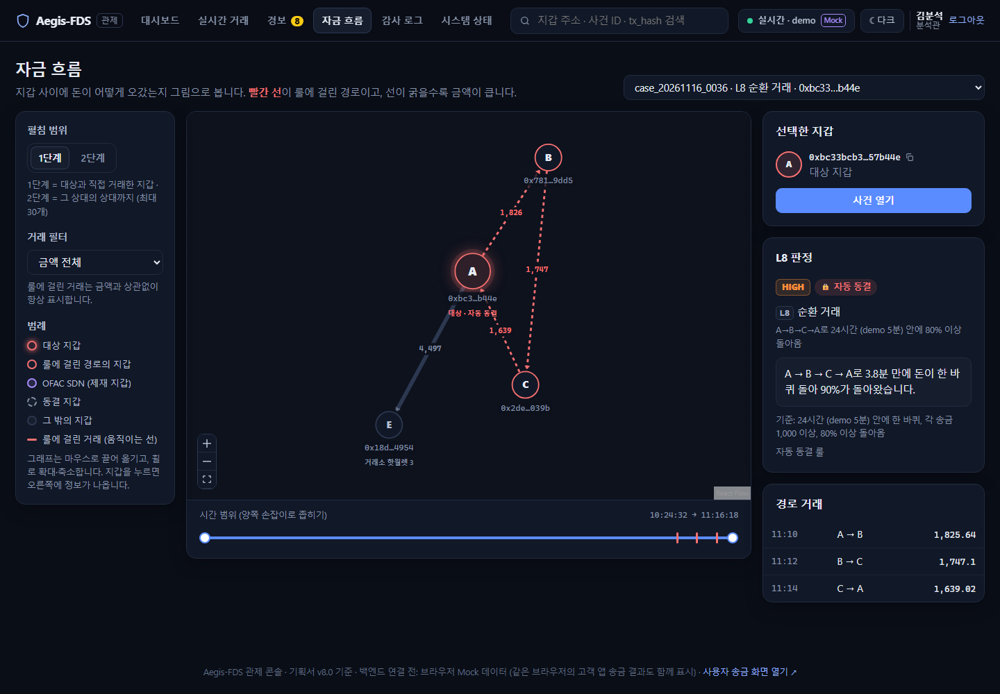
| 영역 | 보는 법 |
|---|---|
| 오른쪽 위 사건 선택 | 다른 사건의 그래프로 바꾸기. 사건 상세의 [자금 흐름 그래프로 보기]로 와도 됨 |
| 가운데 그래프 | 동그라미 = 지갑, 화살표 = 송금 방향, 숫자 = 금액, 선 굵기 = 금액 크기. 빨간 움직이는 선 = 룰에 걸린 거래. 마우스로 끌어 옮기고 휠로 확대·축소, 왼쪽 아래 버튼으로 화면 맞춤 |
| 지갑 모양 | 빨갛게 빛나는 큰 원 = 대상 지갑 · 빨간 테두리 = 경로의 지갑 · 보라 = OFAC SDN · 점선 = 동결 지갑 |
| 왼쪽 펼침 범위 | 1단계 = 대상과 직접 거래한 지갑 · 2단계 = 그 상대의 상대까지 (최대 30개) |
| 왼쪽 거래 필터 | 작은 금액 숨기기 (룰에 걸린 거래는 항상 표시) |
| 아래 시간 범위 | 양쪽 손잡이로 기간을 좁힘. 빨간 눈금 = 룰에 걸린 거래 시각 |
| 오른쪽 정보 | 누른 지갑의 정보, [이 지갑 펼치기], 판정 내용, 경로 거래 목록 |
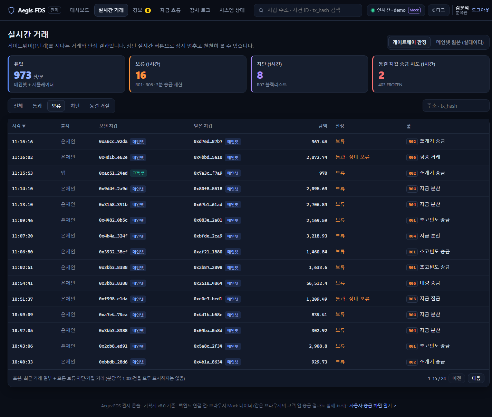
게이트웨이 판정 탭: 들어오는 거래와 판정(통과 · 통과·상대 보류 · 보류 · 차단 · 동결 지갑 거절)과 걸린 룰. 분당 약 1,000건을 모두 보여 주지 않고 일부 표본 + 모든 보류·차단·거절을 보여 줍니다. 출처 "앱" = 송금 화면에서 보낸 요청.
메인넷 원본 (실데이터) 탭: 이더리움 공개 노드에서 약 12초마다 받는 실제 USDT 거래. tx를 누르면 Etherscan에서 확인됩니다 (판정은 백엔드 연결 후).
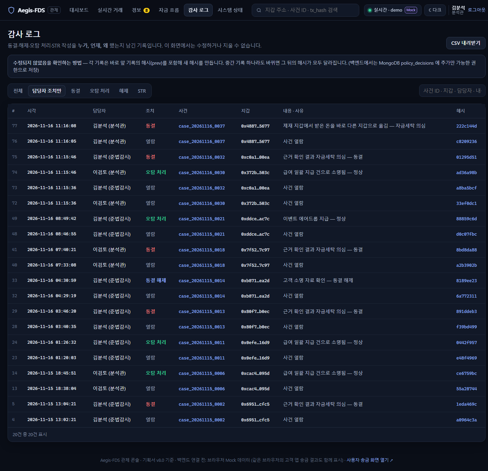
동결 · 해제 · 오탐 처리 · STR 작성 · 열람을 누가 · 언제 · 왜 했는지의 기록입니다. 화면에서 수정·삭제할 수 없고, 각 기록은 앞 기록의 해시를 이어 받아 중간 기록이 바뀌면 드러납니다. 기본은 "담당자 조치만", [CSV 내려받기]로 저장.
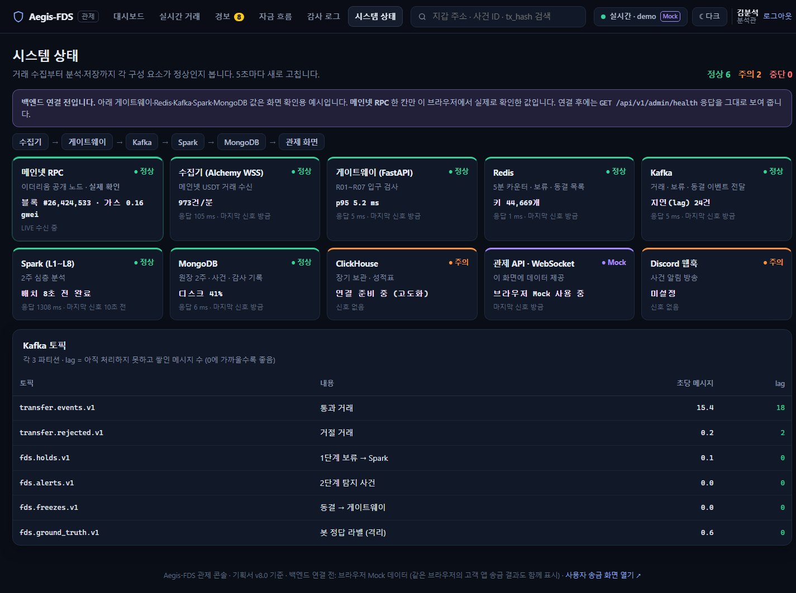
수집기 · 게이트웨이 · Redis · Kafka · Spark · MongoDB · ClickHouse · 관제 API · Discord 상태와 Kafka 토픽 지연(lag). 초록 = 정상 · 주황 = 주의 · 빨강 = 중단 · 보라 = Mock. 백엔드 연결 전에는 "메인넷 RPC" 한 칸만 실제 값이고 나머지는 예시입니다.
| 룰 | 이름 | 기준 | 보류 대상 | 걸린 거래 · 응답 |
|---|---|---|---|---|
| R01 | 초고빈도 송금 | 같은 지갑 송금 5건 이상 (이번 포함) | 보내는 지갑 | 거절 · 429 |
| R02 | 쪼개기 송금 | 900~990 USDT 송금 3회 이상 | 보내는 지갑 | 거절 · 429 |
| R03 | 자금 집금 | 서로 다른 보낸 지갑 5개 이상이 입금 | 받는 지갑 | 통과 · 200 |
| R04 | 자금 분산 | 서로 다른 받는 지갑 5개 이상으로 송금 | 보내는 지갑 | 거절 · 429 |
| R05 | 대량 송금 | 1건 50,000 USDT 이상 | 보내는 지갑 | 거절 · 429 |
| R06 | 핑퐁 거래 | A→B 뒤 5분 안에 B→A | 먼저 보낸 A | 통과 · 200 |
| R07 | 블랙리스트 | 보내거나 받는 지갑이 제재 목록 | 항상 차단 | 거절 · 403 |
| 룰 | 이름 | 기준 | 조치 | 등급* |
|---|---|---|---|---|
| L1 | 반복 보류 | 2주(20분) 안에 1단계 보류 3회 이상 — 새 보류만 셈 (보류 중 재시도는 제외) | 자동 동결 | HIGH |
| L2 | 쪼개서 대량 송금 | 24시간(5분) 누적 50,000 이상, 한 건은 모두 50,000 미만 | 자동 동결 | HIGH |
| L3 | 장기 쪼개기 | 2주(20분) 안에 900~990 송금 10회 이상 | 자동 동결 | HIGH |
| L4 | 경유 지갑 | 1,000 이상 받고 1시간(1분) 안에 80% 이상 재송금, 3회 | 검토 대기 | MEDIUM |
| L5 | 위험 지갑 접촉 | 제재 지갑에게서 받음 = CRITICAL / 제재 지갑에 보냄 = HIGH / 동결 지갑과 누적 10,000 이상** = MEDIUM. R07 차단 시도는 제외 | 검토 대기 | 유형별 |
| L6 | 급격한 활동 증가 | 오늘 거래 수가 2주 하루 평균의 10배 이상, 최소 20건 | 검토 대기 | MEDIUM |
| L7 | 새 상대 집중 | 24시간(5분) 안에 처음 보내는 상대 20곳 이상 | 검토 대기 | MEDIUM |
| L8 | 순환 거래 | A→B→C→A, 24시간(5분) 안에 80% 이상 돌아옴, 건당 1,000 이상 | 자동 동결 | HIGH |
* L5를 뺀 등급과 ** L5 MEDIUM 금액 기준(10,000 USDT)은 기획서에 없어 임시로 정한 값입니다. 팀 확정 후 바뀔 수 있습니다.
준비: 송금 화면(:8080)과 관리자 화면(:8080/admin)을 같은 브라우저의 두 탭에 열고 관리자는 analyst로 로그인합니다. 송금 화면의 시연 도우미 → [초기화].
| # | 시연 | 조작 | 기대 결과 |
|---|---|---|---|
| 1 | 전체 상황 | 관리자 대시보드 → 할 일 안내 · 거래 흐름 · 룰별 건수 설명 | 검토 대기 n건, CRITICAL 안내 |
| 2 | 실제 데이터 | 실시간 거래 → [메인넷 원본] 탭 → tx 클릭 | "● LIVE 메인넷", Etherscan에서 실제 거래 |
| 3 | 정상 송금 | 송금 화면: [새 주소 채우기] → 1,500 → [송금] | "송금이 완료되었습니다" |
| 4 | 쪼개기 → 보류 | 같은 주소로 950 → 960 → 970 | 3번째에 "잠시 지연" + 배너. 관리자 실시간 거래(보류 필터)에 출처 "앱", R02 |
| 5 | 블랙리스트 | [제재 지갑 주소] → 100 → [송금] | "보낼 수 없는 주소입니다". 관리자에는 R07 차단 |
| 6 | 주소 오염 | [가짜 주소 (앞뒤만 같게)] | 빨간 경고, 확인 체크 전에는 송금 불가 |
| 7 | 검토 대기 처리 | 관리자 경보 → [검토 대기] → CRITICAL 줄 두 번 클릭 → 근거 설명 → [동결] → 사유 입력 | 상태 "직원 동결", 조치 기록에 이름·사유 |
| 8 | 오탐 처리 | 다른 검토 대기 사건 → [오탐 처리] → 사유 | 상태 "오탐 처리", 검토 대기 수 1 감소 |
| 9 | STR | [STR 초안] → [내려받기] | 근거가 채워진 초안 파일, 감사 로그에 기록 |
| 10 | 자금 흐름 | 자금 흐름 → L8 사건 → 2단계 펼치기 → 시간 범위 좁히기 | A→B→C→A 빨간 경로, 돌아온 비율 |
| 11 | 감사 · 권한 | 감사 로그 확인 → 로그아웃 → viewer로 로그인 → 사건 열기 | 조치 버튼이 눌리지 않음 |
| 증상 | 원인 · 해결 |
|---|---|
| 로그인 시 "아이디 또는 비밀번호가 맞지 않습니다" | 등록된 계정은 analyst / aegis1234, viewer / view1234 두 개뿐입니다. 본인 이름 등 다른 아이디는 들어갈 수 없습니다 (추가하려면 src/admin/auth.js). |
/admin을 열었는데 송금 화면이 나옴 | 서버를 새 버전으로 다시 켰는지 확인 (Ctrl + C 후 npm run dev). 주소 끝에 /admin/처럼 슬래시를 붙여도 됩니다. |
| 관리자 화면에 내 송금 결과가 안 보임 | 송금 화면과 관리자 화면을 같은 PC · 같은 브라우저로 열어야 합니다 (백엔드 연결 전 Mock). 다른 PC · 시크릿 창과는 공유되지 않습니다. |
| 송금 화면에서 계속 "잠시 지연" | 3분 보류 중입니다. 배너의 남은 시간이 지나면 풀립니다. 또는 시연 도우미 → [초기화]. |
| 송금 화면에서 "송금이 제한된 계정" | 2단계에서 동결되었습니다. 관리자 화면 → 해당 사건 → [동결 해제], 또는 [초기화]. |
| 동결 · 오탐 버튼이 눌리지 않음 | 조회 전용(viewer) 계정이거나, 확인 창에서 사유를 4글자 이상 입력하지 않았습니다. |
| 화면이 계속 바뀌어 보기 어려움 | 상단 [● 실시간] 버튼으로 일시정지. |
| 메인넷 원본 탭이 "시뮬레이션 (RPC 연결 실패)" | 인터넷·방화벽 확인. 공개 RPC 주소 목록은 frontend/src/config.js의 RPC_URLS. |
| 새로 고침하면 관리자 경보 숫자가 조금 바뀜 | Mock 데이터가 접속 시각 기준으로 다시 만들어지기 때문입니다. 담당자 조치(동결·오탐)와 감사 기록은 유지됩니다. |
| 페이지가 열리지 않음 / 팀원 PC에서 안 열림 | npm run dev 터미널이 켜져 있는지, 주소가 192.168.0.22:8080(콜론)인지, 방화벽 허용(firewall_setup.ps1)과 이 PC의 IP(ipconfig)를 확인. |
npm이 "스크립트를 실행할 수 없으므로" | npm.cmd run dev 또는 Set-ExecutionPolicy -Scope CurrentUser RemoteSigned |
| 실행 시 라이브러리를 찾을 수 없다는 오류 | 이번 버전에서 라이브러리가 추가되었습니다. npm install 한 번 실행. |
0xbad000…)와 Mock 데이터의 지갑·tx는 시연용 가상 값입니다.